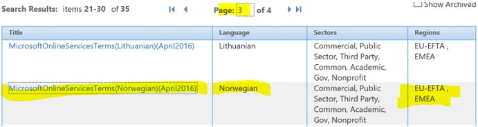

<div class="">
	<div class="container">
		<div class="row">

			<div class="col-md-8">

				<h1 id="admin" class="page-header">Microsoft Office 365</h1>
				
				<div class="bs-callout bs-callout-danger" id="">
		 			<h4>Proof of concept</h4>
		 			<p>Startpakke er under utvikling.</p>
				</div>
			
				<div class="bs-docs-section">
					<p><p>Informasjonssikkerhet handler om sikring av konfidensialitet, integritet og tilgjengelighet på informasjon.</p></p>
					<p>Å sikre konfidensialitet innebærer å hindre uautorisert innsyn i informasjon som ikke kan være åpent tilgjengelig for alle. Å sikre integritet innebærer å hindre uautorisert endring og sletting av informasjon. Å sikre tilgjengelighet innebærer å sikre tilgang til informasjon for alle som skal ha tilgang.<p>
					<p>Risiko- og sårbarhetsanalyse (ROS-analyse) handler om at virksomheten selv setter seg ned og analyserer svakhetene (sårbarhetene) ved et system opp mot risikoelementene konfidensialitet, integritet og tilgjengelighet, og iverksetter tiltak på de områdene hvor svakhetene anses som kritiske.<p>
					<p>Det er anbefalt å gjennomføre en ROS-analyse før man tar i bruk skytjenester som Office 365. Dette gjøres hovedsakelig for å sikre overholdelse av regelverk i forhold til lagring av sensitive data, men også for å identifisere og klassifisere eventuelle sårbarheter og feil som kan oppstå i forbindelse med implementering og bruk av Office 365. Risikoer graderes og eventuelle tiltak for å redusere disse beskrives. Dette er en teoretisk tilnærming for å kartlegge om identifiserte risikoer er akseptable eller ikke. Dette settes ut fra forhåndsgitte kriterier og vekting av disse.<p>
					<p>Datatilsynet anbefaler at man gjennomfører ROS-analyse før man tar i bruk tjenester fra skytilbydere som Office 365, Amazon og Google Apps.<p>
					<p>Sekretariat for informasjonssikkerhet i UNINETT (https://www.uninett.no/infosikkerhet) tilbyr facilitering av ROS-analyse for UH-institusjonene. De har utviklet en egen mal for ROS-analyse av kritiske IT-systemer. Denne er benyttet ved gjennomføring ROS-analyse for innføring av O365 ved NTNU. Rapport fra denne ROS-analysen finnes her:<p>
					<p>ROS-analyse rapport NTNU<p>
					<p>Hvilken metode man benytter for gjennomføring av ROS-analyse er ikke det viktigste. Hovedsaken er at man i fellesskap setter seg ned og avdekker svakheter, vurderer sannsynlighet, kritikalitet og konsekvens, og iverksetter tiltak. I ytterste konsekvens kan kombinasjonen sannsynlighet/kritikalitet og konsekvens være så omfattende at det ikke er mulig å iverksette realistiske tiltak innenfor akseptable kostnadsrammer (Det handler ofte til sjuende og sist om økonomi). Da kan resultatet være at innføringen av nytt system utsettes inntil det er kommet opp andre alternativer eller grunnleggende forutsetninger er endret.<p>
					<p>I de aller fleste tilfellene vil tiltak for å etablere tilfredsstillende informasjonssikkerhet handle om bevisstgjøring og opplæring av brukere.<p>
				</div>				
				
				<h2 id="kravspesifikasjon" class="page-header">Juridisk veileder for skytjenester</h2>
			
				<div class="bs-docs-section">
					<p>For mange universiteter og høgskoler er skytjenester attraktive alternativer til selv å drifte IT-systemer og -tjenester som anvendes i forskning, undervisning, administrasjon eller formidling. Samtidig er det usikkerhet knyttet til hvilke lover og regler som gjelder for bruk av skytjenester: «hvilke rettslige krav stilles og hvordan kan vi overholder de lover og regler som gjelder»?<p>
					<p>UNINETT har satt sammen en veileder (https://www.uninett.no/node/3477) der det gjøres rede for de viktigste lovene og reglene for bruk av skytjenester. Veilederen retter seg spesielt mot ansatte ved universiteter og høyskoler som har ansvaret for valg og forvaltning av skytjenester.<p>
				</div>
				
				<h2 id="kravspesifikasjon" class="page-header">Integrasjonsstrategi</h2>
			
				<div class="bs-docs-section">
					<p>Personopplysningsloven med forskrift krever at virksomheten gjennomfører en risikovurdering før driften av IT-tjenester eller lagring av informasjonsverdier settes ut i skyen. Tilsvarende risikovurderinger skal gjentas med jevne mellomrom (for eksempel årlig) så lenge virksomheten benytter seg av tjenesten, og risikovurderingene skal dokumenteres. Det er informasjonssikkerheten som skal risikovurderes, det vil si om leverandørens tjeneste og virksomhetens egen bruk av tjenesten oppfyller de kravene som virksomheten stiller til sikring av personopplysningenes konfidensialitet, integritet og tilgjengelighet. Risikovurderingen skal derfor ikke bare fokusere på sikkerhetsutfordringer som kan oppstå hos virksomheten, men bør omfatte hele driftsløsningen. Hvis risikovurderingen viser at sikringen av personopplysningene ikke er tilfredsstillende, kan ikke virksomheten ta tjenesten i bruk (eller fortsette å anvende tjenesten) uten at dette er i strid med reglene i personopplysningsloven med forskrift.<p>
					<p>I veiledningen ”Sikker håndtering av personopplysninger i skolen”(2011), utgitt av Senter for IKT i utdanningen, forklares det hva risikovurderinger er og hvordan de kan gjennomføres:<p>
					<p>https://iktsenteret.no/ressurser/sikker-handtering-av-personopplysninger-i-skolen<p>
					<p>Det er virksomheten som er hovedansvarlig for at det gjennomføres risikovurderinger og at det foreligger en skriftlig avtale med leverandøren av IT-tjenester som oppfyller kravene skissert ovenfor. Leverandøren har samtidig et selvstendig ansvar for at kravene som virksomheten stiller i databehandleravtalen, spesielt når det gjelder sikring av opplysningenes konfidensialitet, integritet og tilgjengelighet, blir ivaretatt. Dette fremgår av personopplysningsloven § 13, 1. ledd.<p>
					<p>Dersom Datatilsynet gjennomfører tilsyn hos virksomheten og oppdager manglende overholdelse av reglene om informasjonssikkerhet, risikovurderinger og databehandleravtaler, vil Datatilsynet fatte vedtak om at avvikene fra regelverket må rettes.<p>
					<p>Ved alvorlige brudd på reglene kan Datatilsynet ilegge følgende sanksjoner:<p>
					<ul>
  						<li>For det første kan virksomheten straffes med bøter (overtredelsesgebyr) av Datatilsynet hvis personopplysninger overføres til leverandører uten at det er inngått en skriftlig avtale som oppfyller vilkårene i personopplysningsloven med forskrift.</li>
  						<li>For det andre kan virksomheten straffes med bøter av Datatilsynet hvis det foreligger en databehandleravtale med leverandøren, men uten at skoleeier har sikret seg muligheter til å kontrollere at leverandøren overholder vilkårene i avtalen.</li>
  						<li>For det tredje kan leverandøren straffes med bøter av Datatilsynet hvis vilkårene i databehandleravtalen ikke følges opp i praksis. Ved spesielt alvorlige regelbrudd kan Datatilsynet anmelde forholdet til politiet. I tillegg kan den registrerte (ansatte, pasient, student, elev) kreve erstatning fra virksomheten og leverandøren hvis bruken av eksterne IT-tjenester fører til krenkelser av hans eller hennes personvern.</li>
					</ul>
				</div>	
				
				<h2 id="kravspesifikasjon" class="page-header">Lokalisering</h2>
			
				<div class="bs-docs-section">
					<p>http://o365datacentermap.azurewebsites.net<p>
					<p>Office 365 Moduler som ikke er lokalisert i Europa:<p>
					<ul>
  						<li>Yammer</li>
  						<li>Sway</li>
					</ul>
					<p>Forms og Video er ikke listet opp og det er derfor usikkerhet rundt disse.<p>
				</div>
				
				<h2 id="kravspesifikasjon" class="page-header">Databehandleravtalen til Office 365</h2>
			
				<div class="bs-docs-section">
					<p>Vilkårene for databehandling (inkludert EUs standard kontraktvilkår) og vilkårene i Microsofts HIPAA-avtale for forretningsforbindelser er inkludert i Online Services-vilkårene, som er en del av abonnementsavtalen din for Microsoft Online.<p>
					<p>https://portal.office.com/Commerce/Supplements.aspx<p>
					<p>Dersom du ønsker å få en utskrift av databehandleravtalen til Office 365 finner du denne på Online Services Terms (OST). Logg på her og velg språk:<p>
					<p>http://www.microsoftvolumelicensing.com/DocumentSearch.aspx?Mode=3&DocumentTypeId=31<p>
					
					
					
					<p>Denne wordfilen som blir lastet ned er ferdig signert av Microsoft og du trenger ikke gjøre noe mer med Microsoft.<p>
										
				</div>


			</div>
			
		</div>
	</div>
</div>
